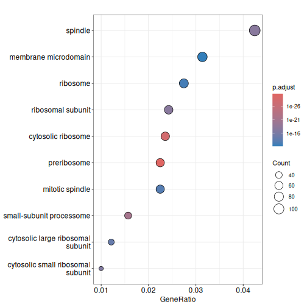
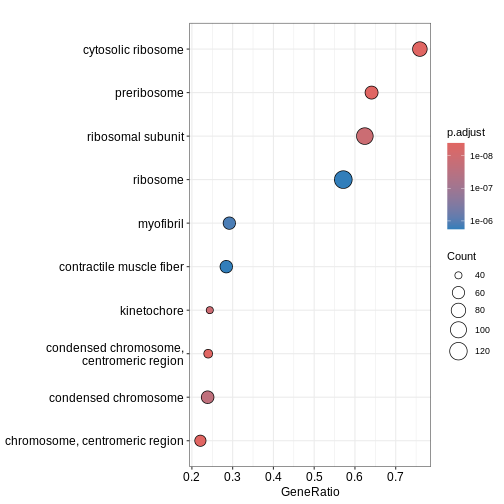
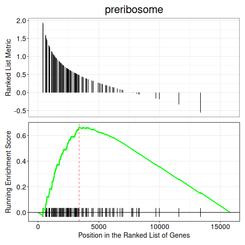

Gene Ontology testing with clusterProfiler
Last updated on 2026-08-03 | Edit this page
Estimated time: 12 minutes
Overview
Questions
- What are the different types of GO terms (BP, MF, CC)?
- How do we perform ORA using
enrichGO()function? - How can we run GSEA-style functional class scoring with
gseGO()function?
Objectives
- Apply GO-based enrichment methods using
clusterProfiler - Perform both ORA and GSEA using the GO terms database
- Build confidence in navigating GO resources and interpreting enriched terms
Introduction
The Gene Ontology (GO) project is a major bioinformatics initiative
that standardises how we describe gene functions across species,
organising them into three categories: Biological Process, Molecular
Function and Cellular Component. clusterProfiler is an R
package that allows us to test whether these GO terms are associated
with our RNA-seq results and gain insight into the pathways or functions
represented in our data. This section demonstrates how to perform both
over-representation analysis (ORA) and
functional class scoring (FCS) with GO database,
depending on whether you are working with a list of significant genes or
full ranked expression data.
Over-Representation Analysis (ORA)
ORA tests whether a list of significant genes are linked to specific GO terms. The input is a vector of gene IDs (or list of genes) that passes your differential expression cut-off. ORA can be run separately for downregulated and upregulated genes to reveal which GO terms are enriched in each direction.
We first subset the debasal dataset to extract genes
with adjusted p-value below 0.01 and store this set of significant genes
in an object called genes. We then run enrichGO function
using this gene list, specifying the organism database
org.Mm.eg.db, the identifier type ENTREZID and
the GO category of interest CC (for cellular component).
The function is configured with standard p-value and q-value, using
Benjamini-Hochberg correction. We use the function head()
to check the first few lines of output.
R
debasal$Status <- debasal$adj.P.Val < 0.01
gene <- debasal$ENTREZID[debasal$Status]
ego <- enrichGO(gene = gene,
OrgDb = org.Mm.eg.db,
keyType = 'ENTREZID',
ont = "CC",
pAdjustMethod = "BH",
pvalueCutoff = 0.01,
qvalueCutoff = 0.05,
readable = TRUE)
head(ego)
OUTPUT
ID Description GeneRatio BgRatio
GO:0030684 GO:0030684 preribosome 63/2804 105/25804
GO:0022626 GO:0022626 cytosolic ribosome 66/2804 124/25804
GO:0032040 GO:0032040 small-subunit processome 44/2804 73/25804
GO:0005819 GO:0005819 spindle 119/2804 450/25804
GO:0044391 GO:0044391 ribosomal subunit 68/2804 185/25804
GO:0022627 GO:0022627 cytosolic small ribosomal subunit 28/2804 38/25804
RichFactor FoldEnrichment zScore pvalue p.adjust
GO:0030684 0.6000000 5.521541 16.21001 3.722343e-34 2.810369e-31
GO:0022626 0.5322581 4.898141 15.19256 2.316529e-31 8.744898e-29
GO:0032040 0.6027397 5.546753 13.58297 2.200476e-24 5.537865e-22
GO:0005819 0.2644444 2.433568 10.71178 1.051630e-20 1.984952e-18
GO:0044391 0.3675676 3.382565 11.35559 1.354371e-20 2.045101e-18
GO:0022627 0.7368421 6.780839 12.45143 1.432799e-19 1.802938e-17
qvalue
GO:0030684 1.754661e-31
GO:0022626 5.459899e-29
GO:0032040 3.457580e-22
GO:0005819 1.239309e-18
GO:0044391 1.276864e-18
GO:0022627 1.125669e-17
geneID
GO:0030684 Wdr36/Rps17/Pes1/Utp14b/Mak16/Rps11/Pno1/Krr1/Tsr1/Bysl/Riok2/Rcl1/Utp18/Dimt1/Wdr74/Wdr43/Nop14/Fbl/Rps19/Ppan/Ebna1bp2/Rps5/Nat10/Rps23/Srfbp1/Nol6/Nip7/Rps4x/Noc2l/Tbl3/Rps8/Rps7/Rps16/Rps27a/Pwp2/Ftsj3/Noc4l/Wdr46/Rps15a/Utp15/Riok1/Mrto4/Rps14/Rps9/Rps3a1/Wdr75/Rps24/Utp4/Rrp15/Rps28/Heatr1/Nop56/Prkdc/Dhx37/Mphosph10/Rrp1b/Ltv1/Rrs1/Rps12/Rps19bp1/Rrp9/Nob1/Utp25
GO:0022626 Rps15/Rpl5/Rpl36/Rps21/Rps17/Rpl19/Rps2/Usp10/Rpl18/Rps11/Rpl11/Gspt1/Rps20/Rpl12/Rpl13a/Rplp0/Rps26/Rplp2/Rpl10a/Rpl26/Rpl31/Rpl14/Rps19/Rps5/Rps10/Rpl7a/Rps23/Rpl4/Rpl22/Rpl36a/Rps4x/Rpl23/Rps8/Rps7/Rpl41/Rpl10/Rps16/Rps27a/Rpl8/Rpl32/Etf1/Rps15a/Rpl24/Rpl21/Rpl27/Rps14/Rpsa/Rps9/Rps3a1/Ppargc1a/Rplp1/Rpl35/Rps3/Rpl23a/Rps24/Rps18/Rps28/Rps25/Rpl18a/Rpl34/Rpl3/Rpl15/Rps12/Abce1/Rps29/Rpl6
GO:0032040 Wdr36/Rps17/Utp14b/Rps11/Pno1/Krr1/Rcl1/Utp18/Dimt1/Wdr43/Nop14/Fbl/Rps19/Rps5/Nat10/Rps23/Nol6/Rps4x/Tbl3/Rps8/Rps7/Rps16/Rps27a/Pwp2/Noc4l/Wdr46/Rps15a/Utp15/Rps14/Rps9/Rps3a1/Wdr75/Rps24/Utp4/Rps28/Heatr1/Nop56/Prkdc/Dhx37/Mphosph10/Rps12/Rps19bp1/Rrp9/Utp25
GO:0005819 Luzp1/Gem/Cenpf/Wdr5/Mapre3/Haus4/Kmt5b/Lzts2/Ccnb1/Birc5/Ncor1/Prpf19/Hmmr/Map4/Nsun2/Kifc1/Kntc1/Cdc20/Cltc/Dctn1/Cdk1/Shcbp1/Ctdp1/Cspp1/Mad2l1/Spdl1/Ccsap/Kif15/Dpysl2/Hecw2/Spice1/Afg2a/Kif22/Cdc27/Ckap5/Cep170/Invs/Anxa11/Nedd9/Nusap1/Adrb2/Tppp/Ckap2/Gpsm2/Gsk3b/Parp4/Csnk1d/Racgap1/Kif20a/Rassf10/Prc1/Cdca8/Plk1/Ercc2/Tmem201/Cenpe/Npm1/Ino80/Clasp2/Tubb2a/Dlgap5/Mapk14/Rangap1/Tbccd1/Sgo1/Ccdc66/Topors/Ect2/Ralbp1/Eml4/Ska1/Arl8a/Git1/Tpx2/Cep63/Knstrn/Champ1/Zzz3/Kif18b/Fam110a/Ikbkg/Pmf1/Nup62/Kif23/Nek6/Unc119/Dzip1l/Cdk5rap2/Bub1b/Rcc2/Spag5/Diaph3/Rps3/Hnrnpu/Sirt2/Kif11/Chmp3/Kat2b/Ckap2l/Kif2a/Hspa2/Cep350/Rps6ka2/Clasp1/Pard3/Espl1/Nek7/Ppp2cb/Mical3/Tbl1x/Slc25a5/Plekhg6/Mtcl1/Aurkb/Arhgef2/Kif2c/Kif14/Ddx11/Tacc3
GO:0044391 Rps15/Rpl5/Rpl36/Rps21/Rack1/Rps17/Rpl19/Rps2/Rpl18/Rps11/Rpl11/Rps20/Rpl12/Rpl13a/Rplp0/Rps26/Mrpl17/Rplp2/Rpl10a/Rpl26/Rpl31/Rpl14/Rps19/Rps5/Rps10/Rpl7a/Rps23/Rpl4/Rpl22/Rpl36a/Npm1/Rps4x/Rpl23/Rps8/mt-Rnr2/Rps7/Rpl41/Rpl10/Rps16/Rps27a/Rpl8/Rpl32/Rps15a/Rpl24/Rpl21/Rpl27/Rps14/Rpsa/Rps9/Mrpl12/Rps3a1/Rplp1/Rpl35/Rps3/Mrpl52/Rpl23a/Rps24/Rps18/Rps28/Rps25/Rpl18a/Rpl34/Rpl3/Rpl15/Rps12/Mrps30/Rps29/Rpl6
GO:0022627 Rps15/Rps21/Rps17/Rps2/Rps11/Rps20/Rps26/Rps19/Rps5/Rps10/Rps23/Rps4x/Rps8/Rps7/Rps16/Rps27a/Rps15a/Rps14/Rpsa/Rps9/Rps3a1/Rps3/Rps24/Rps18/Rps28/Rps25/Rps12/Rps29
Count
GO:0030684 63
GO:0022626 66
GO:0032040 44
GO:0005819 119
GO:0044391 68
GO:0022627 28We can then use dotplot() function to visualise the
results in the form of a dot plot. From the plot below, we can see that
GO term cellular component spindle, membrane microdomain and ribosome
are top enriched terms.
R
dotplot(ego)

Challenge
Challenge! Can you identify enriched GO term biological process in
deluminal dataset? Are the enriched pathways similar?
Gene Set Enrichment Analysis (GSEA)
We can also perform GSEA using GO database. GSEA is a type of functional class scoring method that evaluates whether genes belonging to a GO term tend to appear at the top or bottom of a ranked gene list, rather than relying on a cut-off (i.e. adj.P.Val < 0.01). The input is a continuous ranking metric (e.g. log2FC) for all genes. This allows the detection of subtle but coordinated shifts in GO terms for both downregulated and upregulated pathways.
We begin by creating a ranked gene list for GSEA by extracting the
logFC values from debasal dataset and its corresponding
ENTREZID. We then sort this vector in a decreasing order so
that the upregulated genes appear at the top of the list and the
downregulated genes at the bottom. Using this ranked gene list, we run
gseGO() to perform GSEA on GO terms CC, by
specifying the organism database, gene ID type, gene set limits and
p-value cut-off for enrichment.
R
debasal_genelist <- debasal$logFC
names(debasal_genelist) <- debasal$ENTREZID
debasal_genelist <- sort(debasal_genelist, decreasing = TRUE)
ego3 <- gseGO(gene = debasal_genelist,
OrgDb = org.Mm.eg.db,
keyType = 'ENTREZID',
ont = "CC",
minGSSize = 100,
maxGSSize = 500,
pvalueCutoff = 0.05,
verbose = FALSE)
head(ego3)
OUTPUT
ID Description setSize
GO:0030684 GO:0030684 preribosome 104
GO:0022626 GO:0022626 cytosolic ribosome 110
GO:0000776 GO:0000776 kinetochore 167
GO:0000779 GO:0000779 condensed chromosome, centromeric region 177
GO:0044391 GO:0044391 ribosomal subunit 169
GO:0000775 GO:0000775 chromosome, centromeric region 242
enrichmentScore NES pvalue p.adjust qvalue rank
GO:0030684 0.6665752 2.403534 1.000000e-10 4.625000e-09 4.625000e-09 3377
GO:0022626 0.6280927 2.259154 1.898297e-10 7.023700e-09 7.023700e-09 4038
GO:0000776 0.5753751 2.189832 1.000000e-10 4.625000e-09 4.625000e-09 1254
GO:0000779 0.5636384 2.158333 1.000000e-10 4.625000e-09 4.625000e-09 1254
GO:0044391 0.5552514 2.108983 2.988331e-10 9.214021e-09 9.214021e-09 4724
GO:0000775 0.5286434 2.075855 1.000000e-10 4.625000e-09 4.625000e-09 1417
leading_edge
GO:0030684 tags=64%, list=21%, signal=51%
GO:0022626 tags=72%, list=26%, signal=54%
GO:0000776 tags=25%, list=8%, signal=23%
GO:0000779 tags=24%, list=8%, signal=22%
GO:0044391 tags=62%, list=30%, signal=44%
GO:0000775 tags=21%, list=9%, signal=20%
core_enrichment
GO:0030684 72515/59028/14113/235036/67223/72462/104662/215193/59014/67973/67619/98956/27966/217995/56095/57741/67222/69902/66538/67134/213773/21771/105372/66164/53414/67920/78294/71340/208144/57750/107071/20085/110816/57315/52705/230082/20055/20115/20116/217109/20103/20088/64934/66249/68052/66254/100608/54127/20091/67045/20042/73674/353258/20068/76846/72554/267019/20102/20044/27207/69072/195434/225348/14791/57294/66475/27993
GO:0022626 16785/56040/269261/22224/20084/19982/68436/22186/78294/67186/67097/20085/67671/20055/19951/11837/100503670/20115/27367/20116/54217/27370/76808/20103/270106/268449/20088/19896/67025/68052/20090/75617/24015/20054/27050/54127/26961/67115/67891/67945/114641/22121/19946/20091/19899/20042/66489/67427/66480/66481/65019/19921/20068/19988/19933/76846/267019/20102/20044/27207/19981/19942/14852/19941/57294/66475/19944/225363/27176/57808/16898/19934/110954/68193/11815/67281/207214/105083/319195
GO:0000776 20877/12235/66468/66977/66570/108000/67629/12236/76464/208628/26886/12615/268697/18817/102920/54141/67052/18005/60411/107995/72415/68549/70385/22137/11799/73804/51944/72155/229841/381318/71876/68014/67177/56150/69928/66934/66442/67037/19387/101994/236930
GO:0000779 20877/12235/66468/66977/54392/66570/108000/67629/12236/76464/208628/26886/12615/268697/18817/102920/54141/67052/18005/60411/107995/72415/68549/70385/22137/11799/73804/51944/72155/229841/381318/71876/68014/67177/56150/69928/66934/66442/67037/19387/101994/236930
GO:0044391 16785/56040/269261/20084/56282/19982/66973/68436/22186/78294/67186/67097/20085/67671/20055/18148/19951/11837/100503670/20115/14694/68836/27367/20116/54217/27370/76808/20103/270106/268449/20088/19896/67025/68052/20090/75617/69163/20054/27050/54127/26961/67115/67891/67945/114641/22121/19946/20091/19899/20042/66489/59054/67427/60441/66480/66481/65019/19921/27397/20068/118451/19988/19933/76846/267019/79044/20102/20044/27207/78523/19981/19942/66230/19941/57294/66475/19944/94063/27176/57808/16898/102060/66258/19934/110954/28028/68193/75398/67281/207214/319195/50529/26451/14109/19989/20104/64657/64655/66407/20005/94065/216767/67840/67308/19943
GO:0000775 20877/12235/66468/66977/54392/66570/108000/52276/67629/72107/12236/70645/76464/208628/26886/12615/71988/268697/18817/102920/54141/67052/18005/60411/217653/107995/72415/68549/70385/22137/11799/73804/51944/21973/72155/229841/381318/217578/71876/68014/67177/56150/17345/69928/66934/66442/67037/19387/101994/236930/218973/219114
log2err
GO:0030684 NaN
GO:0022626 0.8266573
GO:0000776 NaN
GO:0000779 NaN
GO:0044391 0.8140358
GO:0000775 NaNR
dotplot(ego3)

We can also use the gseaplot() function to visualise
GSEA result for a specific gene set. In this example, we select the
top-ranked enriched GO term (geneSetID = 1). The result-ing plot
displays how genes contributing to the enrichment of this GO term are
distributed in the ranked gene list.
R
gseaplot(ego3, by = "all", title = ego3$Description[1], geneSetID = 1)

- GO terms are divided into Biological Process (BP), Molecular Function (MF) and Cellular Component (CC), which can be analysed separately or together depending on the biological question.
- The
enrichGO()andgseGO()functions inclusterProfilerallow users to perform ORA and GSEA using the GO database directly. - GO testing results highlight gene sets or pathways that are overrepresented in your dataset, allowing interpretation of downregulated or upregulated genes.